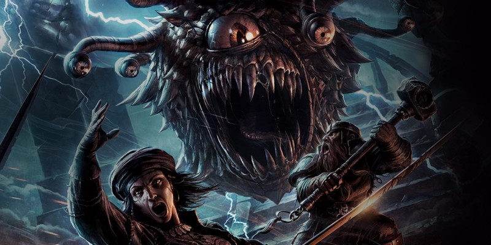

Unearthed Arcana
« Unearthed Arcana » est une rubrique mensuelle publiée sur le site de Wizards of the Coast et dans laquelle le département R&D de D&D présente de nouvelles idées de conception à utiliser à votre table de jeu. Le matériel présenté dans cette série est similaire à ce qui s'est fait lors du premier playtest de D&D 5. Les mécanismes de jeu y sont encore au stade de projet, elles sont volatiles, voire instables. Vous pouvez les utiliser à votre table, mais ce ne sont pas encore des règles définitives. Si vous les utilisez, soyez donc prêt à devoir faire face à d'éventuels problèmes. Tout est écrit au crayon à papier, pas à l'encre.
Le matériel est divers : des mécaniques que WotC espère publier un jour dans un supplément ou des règles maison qu'ils utilisent dans leurs campagnes personnelles et qu'ils veulent partager, des options pour le système de base ou du matériel conçu pour un univers de campagne spécifique. Originalement publié en anglais, le contenu est ici traduit en français pour Tapouweb.
- Archétypes martiaux (12/16, 01/18 et 10/19) : 5 nouvelles options (archer arcanique, chevalier, samouraï, tireur d'élite, brute, chevalier runique).
- Archétypes de rôdeur (01/17, 03/17, 10/19, 02/20, 10/20) : 6 nouvelles options (arpenteur de l'horizon, gardien primitif, tueur de monstres, gardien des nuées, vagabond féerique, gardien de drake).
- Archétypes de roublard (01/17, 10/19, 05/20) : 3 nouvelles options (éclaireur, réanimé et fantôme).
- Aventures maritimes (05/15 et 05/18) : le minotaure et le centaure pour PJ, 1 nouveau style de combat, 1 nouvel archétype de roublard (bretteur) et 1 nouvelle origine magique d'ensorceleur (sorcellerie des tempêtes).
- Cercles druidiques (11/16, 01/18, 10/19, 02/20) : 6 nouvelles options (cercle des rêves, du berger, du crépuscule, des spores, des feux rugissants, des étoiles).
- Classes de prestige (10/15) : tour d'horizon du concept et la classe de prestige de scribe runique.
- Collèges bardiques (11/16, 09/19, 02/20, 08/20) : 5 nouvelles options (collège de la séduction, des murmures, de l'éloquence, de la création, des esprits).
- Combat de masse (03/15) : des règles pour faire s'affronter des armées.
- Contrées sauvages (02/18) : de nouvelles règles pour gérer l'exploration en extérieur, dans la nature et les contrées sauvages.
- Des navires et de la mer (11/18) : des règles pour gérer les navires et leur équipage.
- Domaines divins (11/16, 04/18, 10/19, 02/20) : 6 nouvelles options (forge, tombe, protection, ordre, crépuscule, union).
- Dons (07/20) : 16 nouveaux dons, qui reprennent beaucoup de capacités de classe.
- Dons / armes & outils (06/16) : 8 nouveaux dons, de maîtrise d'armes ou d'outils.
- Dons / compétences (04/17) : 18 nouveaux dons liés aux compétences.
- Eberron : Races (02/15 et 07/18) : 4 nouvelles races pour cet univers (changelin, féral, forgelier et kalashtar).
- Eberron : Artificier (01/17 et 02/19) : une nouvelle classe complète.
- Eberron : Dracogrammes (10/18) : sources de pouvoir magique dans le monde d'Eberron.
- Eberron : Objets magiques (09/18) : focaliseurs arcaniques, objets magiques communs et composants de forgeliers (bralame et doctant).
- Éladrin et gith (09/17) : 3 nouvelles races (éladrin, githyanki et githzerai).
- Elfes (11/17) : 4 nouvelles sous-races d'elfes (avariel, grugach, elfe aquatique et shadar-kai).
- Le fidèle (08/16) : 1 patron d'occultiste (le chercheur) et une 1 tradition arcanique (theurgie).
- Fiélons (10/17) : sous-races de tieffelin, cultes diaboliques et faveurs démoniaques.
- Héros de Krynn (03/22) : 1 race (kender), 1 origine magique d'ensorceleur (magie de la lune), 2 historiques, 10 dons.
- Héros gothiques (04/16) : 1 nouvelle sous-race (revenant), 1 archétype de guerrier (chasseur de monstres) et 1 archétype de roublard (enquêteur).
- Kits AD&D2 (01/16) : 2 nouveaux collèges de barde (collège des épées et de la satire) et 2 nouveaux archétypes de guerrier (cavalier et éclaireur).
- Lignées gothiques (01/21) : 3 nouvelles options de race (dhampir, sang maudit et réincarné).
- Mages de Strixhaven (06/21) : 5 sous-classes de mages.
- Magie noire (12/15) : 2 variantes du tieffelin et 5 nouveaux sorts d'invocation.
- Modifier les classes (04/15) : des conseils pour modifier les classes de base.
- Options draconiques (04/21) : 3 options de races pour drakéide, le kobold, des dons et des sorts.
- Origines magiques d'ensorceleur (02/17, 06/18, 09/19, 02/20) : 6 nouvelles origines (élu divin, sorcellerie du phœnix, sorcellerie de la mer, sorcellerie de la pierre, âme du géant, âme du mécanisme).
- Outreterre (11/15 et 06/17) : 2 nouveaux styles de combat, 1 nouvel archétype de rôdeur (chasseur des profondeurs), 1 nouvelle origine magique d'ensorceleur (ombres) et 1 nouveau patron pour occultistes (le céleste).
- Patrons d'Outremonde (02/17, 06/17, 09/19, 05/20, 08/20) : 5 nouvelles options (la lame maudite, la Reine corneille, Celui qui rôde dans les profondeurs, le génie, le mort-vivant) et de nombreuses nouvelles manifestations occultes.
- Peuples de la Féerie (03/21) : 4 nouvelles races.
- Points d'expérience (08/17) : une nouvelle règle pour attribuer les PX en fonction des trois piliers du jeu.
- Psioniques (03/17) : une nouvelle classe complète.
- Sous-classes psioniques (04/20) : 3 sous-classes psioniques pour guerrier (chevalier psi), roublard (coutelâme) et ensorceleur (âme psionique), des sorts et des dons.
- Races de Ravnica (08/18) : 4 nouvelles races pour cet univers (loxodon, hybride simic, vedalken et viashino).
- Règles optionnelles (06/15) : les joueurs lancent tous les dés, vitalité et alignements modifiés.
- Rencontres (10/16) : une règle alternative à celle du DMG pour équilibrer des rencontres entre PJ et monstres.
- Rôdeur v2 (09/16) : le rôdeur est à priori la classe la moins réussie de D&D 5. Voici ce que pourrait être la version revue par WotC.
- Serments sacrés (12/16, 03/17, 06/17, 09/19, 01/20) : 5 nouvelles options (conquête, traîtrise, rédemption, héroïsme, gardiens).
- Tatouages magiques (2020).
- Traditions arcaniques (02/17, 03/17, 01/18, 10/19, 05/20) : 5 nouvelles options (maîtrise du savoir, magie de guerre, école de l'invention, onomancie, ordre des scribes).
- Traditions monastiques (12/16, 03/17, 08/19, 01/20, 10/20) : 6 nouvelles options (kensei, tranquillité, maître ivre, double astral, miséricorde, dragon ascendant).
- Variantes des capacités de classe (11/19) : plein de nouvelles options afin de redonner un nouvel intérêt aux classes du Player's Handbobok.
- Voies primitives (11/16, 08/19, 01/20) : 5 nouvelles options (gardien ancestral, héraut des tempêtes, zélote, âme sauvage, bête).
- Voyageurs du multivers (10/21) : 6 nouvelles races.
Résumé des options de sous-classes
Ci-dessous, les options de sous-classes proposées par les articles de l'Unearthed Arcana indiqués précédemment, mais arrangées selon les classes existantes.
Barbare
- gardien ancestral [Ancestral Guardian, v2] -> Xanathar's Guide to Everything
- héraut des tempêtes [Storm Herald] -> Xanathar's Guide to Everything
- zélote [Zealot] -> Xanathar's Guide to Everything
- âme sauvage [Wild Soul] -> Tasha's Cauldron of Everything sous le nom de Wild Magic [magie sauvage]
- bête [Beast] -> Tasha's Cauldron of Everything
Barde
- épées [Swords] -> Xanathar's Guide to Everything
- murmures [Whispers] -> Xanathar's Guide to Everything
- satire [Satire]
- séduction [Glamour] -> Xanathar's Guide to Everything
- éloquence [Eloquence] -> Mythic Odysseys of Theros
- création [Creation] -> Tasha's Cauldron of Everything
- esprits [Spirits] -> Van Richten's Guide to Ravenloft
Clerc
- forge [Forge] -> Xanathar's Guide to Everything
- ordre [Order] -> Guildmasters' Guide to Ravnica
- protection [Protection]
- tombe [Grave] -> Xanathar's Guide to Everything
- crépuscule [Twilight] -> Tasha's Cauldron of Everything
- union [Unity]
Druide
- berger [Shepherd, v2] -> Xanathar's Guide to Everything
- crépuscule [Twilight]
- rêves [Dreams] -> Xanathar's Guide to Everything
- spores [Spores] -> Guildmasters' Guide to Ravnica
- feux rugissants [Wildfire] -> Tasha's Cauldron of Everything
- étoiles [Stars] -> Tasha's Cauldron of Everything
Ensorceleur
- âme du géant [Giant Soul]
- élu divin [Favored Soul, v2] -> Xanathar's Guide to Everything sous le nom de Divine Soul [âme divine]
- ombres [Shadow] -> Xanathar's Guide to Everything sous le nom de Shadow Magic [magie des ombres]
- sorcellerie de la mer [Sea Sorcery]
- sorcellerie de la pierre [Stone Sorcery]
- sorcellerie des tempêtes [Storm Sorcery] -> Xanathar's Guide to Everything
- sorcellerie du phœnix [Phoenix Sorcery]
- esprit aberrant [Aberrant Mind] -> âme psionique [Psionic Soul] -> Tasha's Cauldron of Everything sous le nom d'esprit aberrant [Aberrant Mind]
- âme du mécanisme [Clockwork Soul] -> Tasha's Cauldron of Everything
- magie de la lune [Lunar Magic]
Guerrier
- archer arcanique [Arcane Archer, v2] -> Xanathar's Guide to Everything
- brute [Brute]
- cavalier [Cavalier, v2] -> Xanathar's Guide to Everything
- chasseur de monstres [Monster Hunter]
- chevalier [Knight]
- éclaireur [Scout]
- samouraï [Samurai] -> Xanathar's Guide to Everything
- tireur d'élite [Sharpshooter]
- chevalier runique [Rune Knight] -> Tasha's Cauldron of Everything
- guerrier psi [Psychic Warrior] -> chevalier psi [Psi Knight] -> Tasha's Cauldron of Everything sous le nom de guerrier psi [Psi Warrior]
Magicien
- école de l'invention [School of Invention]
- maîtrise du savoir [Lore Master]
- magie de guerre [War Magic] -> Xanathar's Guide to Everything
- théurgie [Theurgy]
- onomancie [Onomancy]
- ordre des scribes [Order of the Scribes] -> Tasha's Cauldron of Everything
Moine
- kensei [Kensei, v2] -> Xanathar's Guide to Everything
- maître ivre [Drunken Master] -> Xanathar's Guide to Everything
- tranquillité [Tranquility]
- double astral [Astral Self] -> Tasha's Cauldron of Everything
- miséricorde [Mercy] -> Tasha's Cauldron of Everything
- dragon ascendant [Ascendant Dragon] -> Fizban's Treasury of Dragons
Occultiste
- le Céleste [Celestial, v2] -> Xanathar's Guide to Everything
- le Chercheur [Seeker]
- la Lame maudite [Hexblade] -> Xanathar's Guide to Everything
- la Reine corneille [Raven Queen]
- Celui qui rôde dans les profondeurs [The Lurker in the Deep]
- le Génie [Genie] -> Tasha's Cauldron of Everything
- le Mort-vivant [Undead] -> Van Richten's Guide to Ravenloft
Paladin
- conquête [Conquest, v2] -> Xanathar's Guide to Everything
- rédemption [Redemption] -> Xanathar's Guide to Everything
- traîtrise [Treachery]
- héroïsme [Heroism] -> Mythic Odysseys of Theros sous le nom de Glory [gloire]
- gardiens [Watchers] -> Tasha's Cauldron of Everything
Rôdeur
- arpenteur de l'horizon [Horizon Walker] -> Xanathar's Guide to Everything
- chasseur des profondeurs [Deep Stalker] -> Xanathar's Guide to Everything sous le nom de Gloom Stalker [traqueur des ténèbres]
- gardien primitif [Primeval Guardian]
- tueur de monstres [Monster Slayer] -> Xanathar's Guide to Everything
- gardien des nuées [Swarmkeeper] -> Tasha's Cauldron of Everything
- vagabond féerique [Fey Wanderer] -> Tasha's Cauldron of Everything
- gardien de drake [Drakewarden] -> Fizban's Treasury of Dragons
Roublard
- bretteur [Swashbuckler] -> Xanathar's Guide to Everything
- éclaireur [Scout] -> Xanathar's Guide to Everything
- enquêteur [Inquisitive] -> Xanathar's Guide to Everything
- réanimé [Revived] → fantôme [Phantom] -> Tasha's Cauldron of Everything
- coutelâme [Soulknife] -> Tasha's Cauldron of Everything
